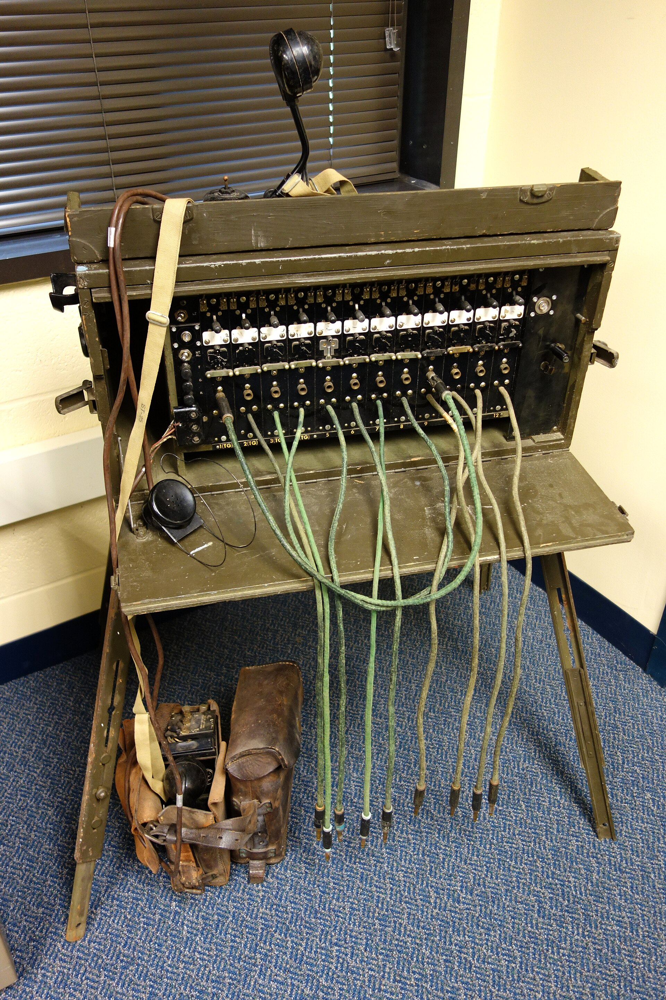
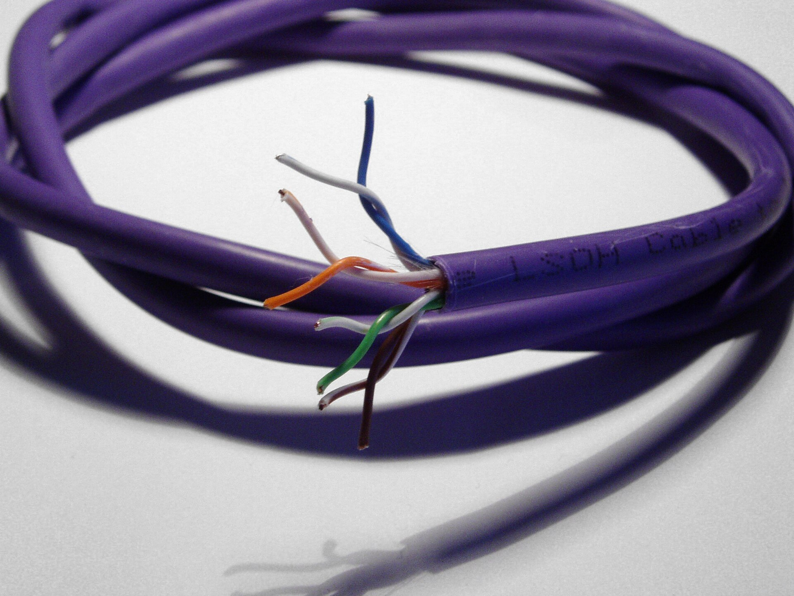
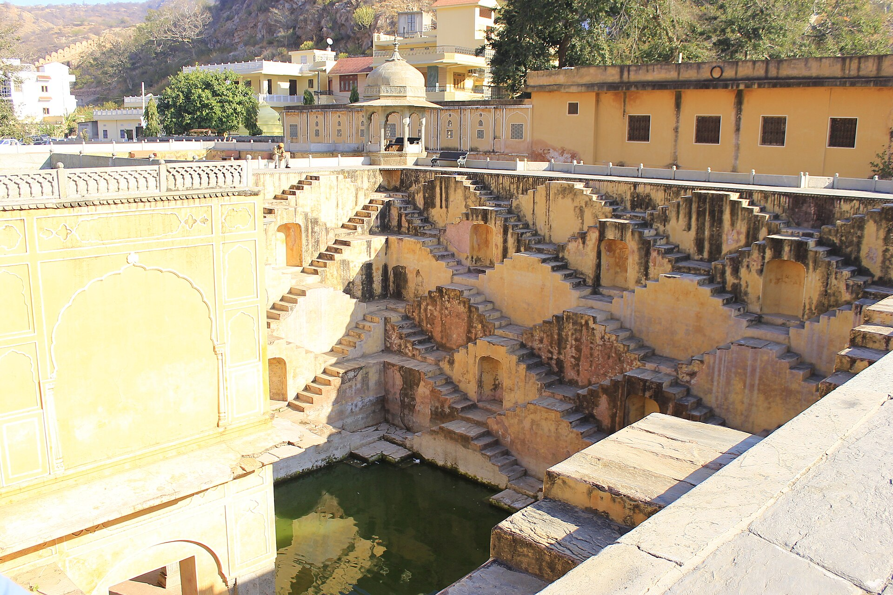
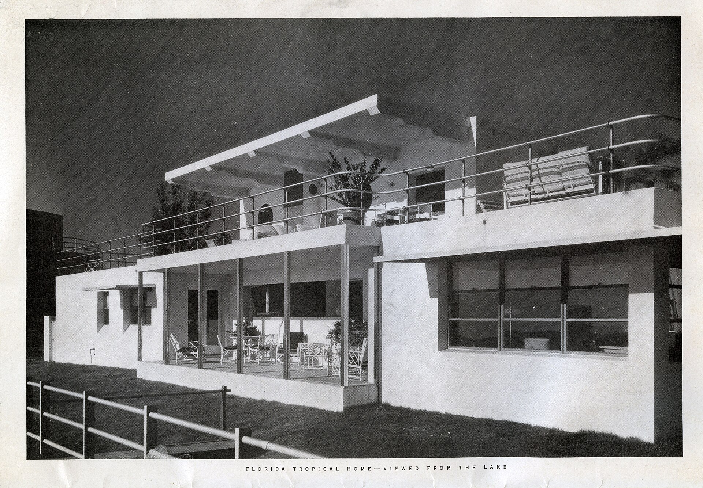

A calm, wired-first smart home. The design pack for a four-bedroom villa, ready for architects, MEP and integrators.
Read the proposalFour-bedroom wellness villa, G+1, 3,400 sq ft

This is the design running on one ordinary day. Move the clock and read what the living room light, the bedroom Wi-Fi, the ventilation and the water valve are doing. It is the schedule from the subsystem design, not a simulation of a product.

Separate routes for mains, KNX and Cat6A, at least one spare 25 mm conduit per floor riser, and sleeves through beams marked before the slab is cast. Late conduit costs many times more than early conduit.


The 1933 Florida Tropical Home, built to live with its climate. Quietwire keeps that openness and puts the wiring behind the walls.
Start with the brief and the assumed plan, or go straight to the budget. Prices are estimates, the design is yours to adapt.
Read the proposal